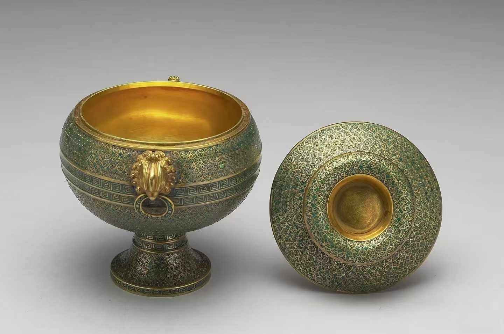
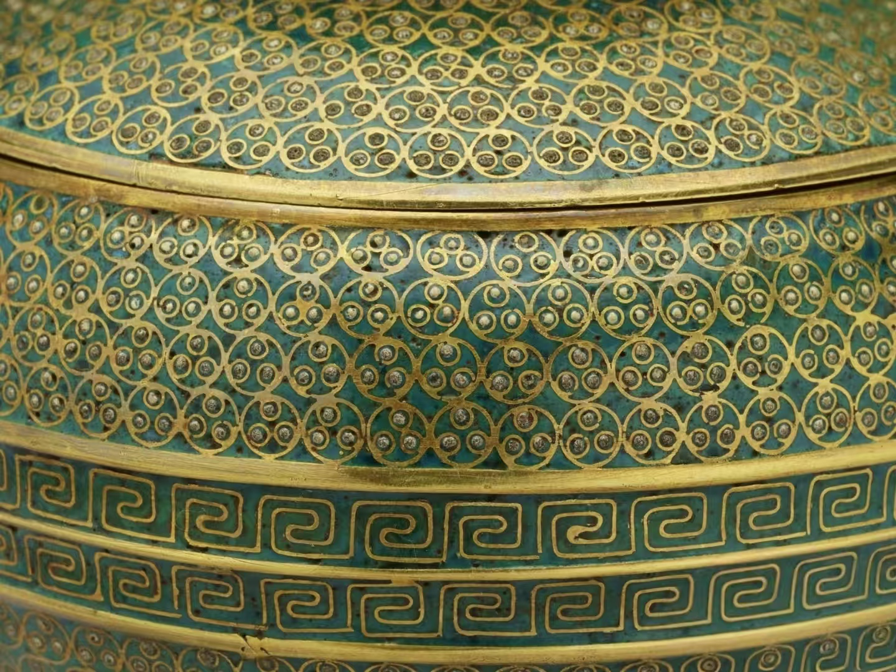
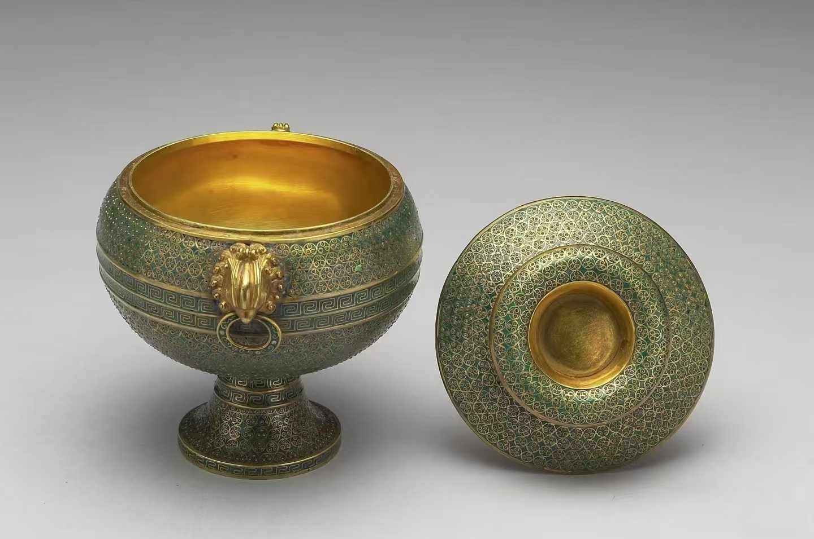
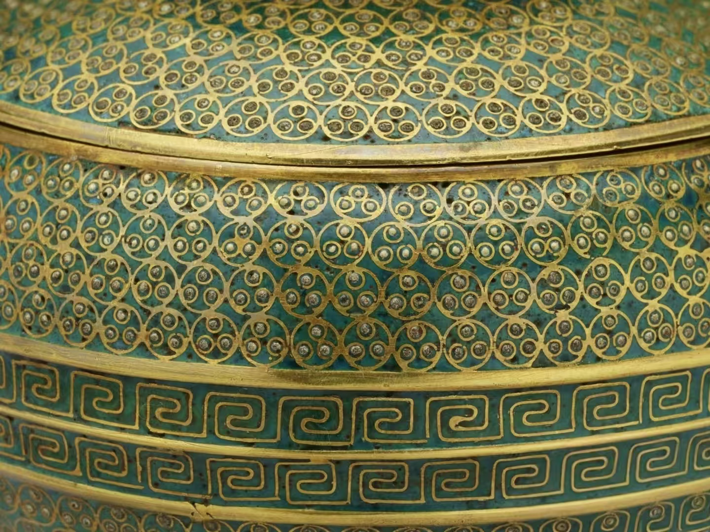

中国掐丝珐琅传承网
中国掐丝珐琅传承网
00
-
00
-
00
中国掐丝珐琅传承网
据《钦定总管内务府现行则例》《清宫述闻》等记载,康熙十九年(1680年)始，宫中设立造办处，初名为养心殿造办处。康熙三十年(1691年)，又以慈宁宫之茶饭房-百五十有一楹为造办处。四十八年(1709年)，复增自虎殿后房百楹。造办处是内务府的下设机构，是专门为皇家制作、承修和保管各种用品的部门。乾隆初年造办处增加到近四十个作:乾隆二十三年(1758年)，又对造办处进行了调整，将二十八作按类别归并为五作，其余十作仍各为一作。精简后的十五作中，“珐琅作”仍为单独一作。造办处“珐琅作”是专门为宫中制作法琅器的作坊。至于法琅作究竟是于哪年设立的，目前尚未发现明确记载，但从现存的宫廷风格的康熙款珐琅器推断，建立造办处时即已有珐琅作了。乾隆六年(1741年)，为扩大法琅器的生产规模，满足皇家对珐琅器的大量需求，又在圆明园六所设珐琅作。造办处珐琅作集中了国内各地的能工巧匠，按照皇帝的御旨，制作出大量精美的珐琅制品。
有清一代署有官方年款的掐丝珐琅有康熙、雍正、乾隆嘉庆、同治、光绪。康熙款掐丝珐琅是清代最早、最可靠的珐琅器。康熙朝掐丝珐琅基本有三种风格，"其一是具有晚明风格的大器，如龙纹大盘、仿汉壶等，过去一直将这部分器物定为明晚期。器型硕大，以缠枝勾莲纹、龙纹为主要纹饰，釉色明亮;其二是珐琅釉失透，釉色灰暗无光泽，器物表面欠光滑，代表作是缠枝勾莲纹镂空三足炉等;其三是掐丝细腻活泼，釉色纯正鲜亮，有明宣德朝珐琅的遗风，螭纹小方盘为典型之作。康熙朝掐丝珐琅传世品有五供、炉、瓶、盘、盒、暖砚、水盛、笔架、香薰、多穆壶等，款识有“大清康熙年制”“康熙年制”楷书、篆书阴刻款、铸款和镂空款。法国巴黎艺术博物馆收藏的掐丝珐琅九龙纹盘、云龙纹多穆壶等都是具有康熙风格的作品。遗憾的是关于康熙朝制作珐琅器的情况很难找到文字记录，我们只能从有限的传世品中管窥康熙朝珐琅的风格与特点。还有一点非常重要，就是康熙朝制作了部分改器,并加上“景泰款”，如前面提及的掐丝珐琅缠枝莲纹尊。
从造办处的档案记录看，雍正皇帝胤禛对艺术有较高的审美和追求，“文雅、素净、精细”是他对造办处制作的各类艺术品的要求。雍正皇帝似乎不喜欢掐丝珐琅，而热衷于铜胎、瓷胎和玻璃胎画珐琅的制作。传世作品中比较可靠的只有台北故宫收藏的金胎掐丝珐琅豆，该豆只有一种绿色功琅釉，制作工艺高超，非常符合胤禛的审美。台北故宫还收藏一件乾隆款金胎掐丝珐琅豆，似乎是雍正的翻版。《清档》记载“雍正五年九月二十五日珐琅作，据圆明园来帖内称，九月二十二日郎中海望持出西洋掐丝绿珐琅盒一个，奉旨:着仿做。钦此。于雍正七年二月初三日仿做得金胎绿色掐丝珐琅盒一件，郎中海望呈进讫。于雍正七年五月初四日做得金胎绿色掐丝珐琅豆一件，郎中海望呈进讫。”"
 



从档案记载看，雍正时期制作了少量的掐丝法琅，如“雍正三年十二月二十六日匣作，太监杜寿交合牌胎折叠双陆盘-件(随檀香速香双陆一分)、掐丝珐琅盆一件(随白玉骰子六个)、银母象棋一分。传旨:照此样做一分，再做秀气着。钦此。于五年十二月三十日做得合牌折叠双陆盘一件(内盛檀香速香双陆一分)、掐丝珐琅骰盆一件(随白玉骰 子六个)、银母象棋一分，郎中海望呈览。”
“雍正四年十二月十二日珐琅作，掌仪司送来礼部来文-张，随木香炉样一件，咨称议政王大臣等议准奏明，奉旨:昭陵、福陵供珐琅香炉两座，交养心殿造办处成造，俟造成时，着内务府派官送至关东，着本处该管大臣官员等同看、安供。钦此。于五年八月十四日做得福陵昭陵掐丝珐琅香炉两座。
“雍正五年九月二十八日珐琅作，郎中海望持出掐丝珐琅瓶一件(是景泰年制)，奉旨:瓶上螭虎款式好，尔等照样烧造珐琅瓶，其螭虎亦照样做。钦此。于六年五月初四日照景泰掐丝珐琅瓶做得珐琅瓶一件，并原交来珐琅瓶一件，郎中海望呈进讫。”
“雍正八年十月二十六日珐琅作，据圆明园来帖内称:本月二十五日首领太监李进朝来说总管太监陈九卿传做掐丝珐琅圆盒一件。记此。于九年二月初四日做得掐丝珐琅圆盒一件，首领李久明持去交太监陈九卿讫。”。收紧凑些。花纹照银盒子上的西番花做。如番花不甚配合即做夔龙掐丝珐琅水盂，要金里。尔向雍和宫将水盂要一件来，照其样式画样几张，做木样几件呈览，准时再做。钦此。于十一年五月初一日做得铜胎掐丝法琅水盂二件、金西洋番花水盂一件，司库常保、首领太监萨木哈呈进讫。
乾隆朝是掐丝珐琅大发展大繁荣的时期，据档案记载，造办处制作了数量可观的珐琅器，种类十分丰富，包括宫廷典章用品、佛教用品、生活用品、陈设品和文房用品等。宫廷典章用品有宝座、屏风、香筒、仙鹤、甪端、太平有象等在紫禁城太和殿内还能看到当年的气派陈设;佛教用品有佛塔、佛龛、佛像、坛城、五供、七珍、八宝等，分别制作于乾隆三十九年(1774年)和乾隆四十七年(1782年)高达2.5米的十二座珐琅塔，陈设在紫禁城梵华楼、宝相楼内，气势恢宏，工艺精湛，耗资巨大;生活用品有熏炉、手炉、冠架盘、碗、茶壶、杯盘、多穆壶、执壶、攒盘、火锅、筷套唾盂、烛台、花浇、鼻烟壶、铜镜等;陈设品可分为四类其一是普通陈设品瓶、罐等，如梅瓶、天球瓶、长颈瓶、双连锦袱瓶、六方贯耳瓶、鸭颈瓶、双管式瓶、英雄瓶、镂空转心瓶、棕式瓶、蒜头瓶、抱月瓶、葫芦瓶等;其二是仿古陈设品，主要是仿商周时期的青铜器，有花觚、鼎、卣、觥簋、钟、扁壶 、罍、奁、甗、尊、觯等，造型古朴,纹饰精美，其三是动物造型陈设品，狮子、麒麟、牺尊、天鸡、天鹿、羊形兽、鸽子、仙鹤、大象、甪端等,形态生动，惟妙惟肖，其四是挂屏、屏等陈设品;其四是文房用品，有笔筒、笔架、笔洗、墨床、砚盒、仿圈、镇纸、水丞等。
乾隆朝掐丝珐琅的胎骨，铜质精纯，胎骨厚重，无轻飘之感，甚至有些器物是用昂贵的黄金制胎;珐琅釉料均无透明感，砂眼减少，细腻光滑，并出现了以金为着色剂的“粉红”色釉，珐琅釉颜色达到 20 余种，色彩之丰富超过了以往任何时期。
在图案装饰上，除继承了明代勾莲纹的作法以外，还运用了仿夏商周青铜器的兽面纹、几何纹，并将山水亭榭、花鸟虫鱼、人物故事作为装饰，追求绘画的意趣，取得了较好的装饰效果。
在器物的镀金、錾刻方面，不惜财力、功力，金色浓厚,乾隆三十三年(1768年)以后的档案中屡见弘历要求加倍镀金的指令，故我们现在看到的乾隆掐丝珐琅器大部分是金光灿烂的效果;在器物的耳、足、底的錾刻花纹，刀工流畅，花纹自如，为器物本身起到了点缀效果;这一时期的掐丝珐琅工艺还常与画珐琅工艺相结合，并镶嵌珠宝，如北京故宫收藏的掐丝珐琅壶(图11)、杯盘等，具有典型的金碧辉煌的皇家艺术风格。乾隆朝珐琅器的款识主要有两种，即铸款和阴刻款，字体有“乾隆年制”和“大乾降年制”